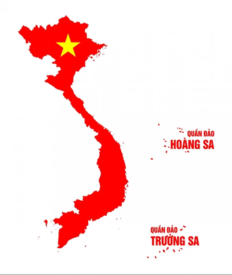
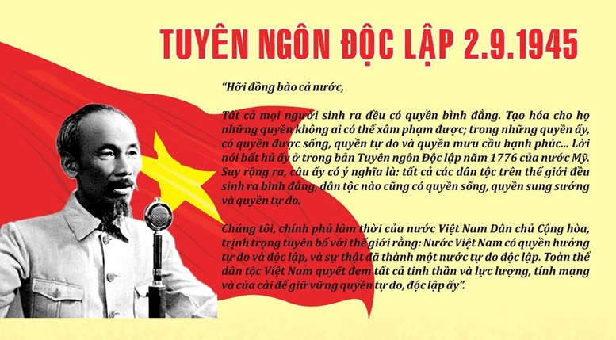

Vietnam: A Country Rich in Ancient Culture and Contemporary Dynamism
The globe has been enthralled by Vietnam, a Southeast Asian country with a rich history and a complex culture, because of its breathtaking scenery, energetic cities, and kind people. From the busy streets of Hanoi to the tranquil splendor of Halong Bay, Vietnam presents a singular fusion of traditional customs and contemporary goals.
Vietnam has been influenced by several dynasties, colonial forces, and battles during its millennium-long history. The Vietnamese have remained resilient and have a strong sense of cultural identity in spite of these difficulties. Vietnam, which embraces globalization while maintaining its cultural legacy, is a fast rising nation today.
Vietnam has enough to offer those who want to explore historic sites, savor delectable food, or just become fully immersed in the Vietnamese way of life.

1945: Declaration of Independence 1945
The year 1945 marked a pivotal moment in Vietnam's history. After decades of colonial rule under French and Japanese occupation, the nation declared its independence on September 2nd, 1945. Led by the charismatic Ho Chi Minh, the Democratic Republic of Vietnam was established, promising a future free from foreign domination. The immediate years following independence were marked by significant challenges, including the First Indochina War against France and the subsequent Vietnam War against the United States.

1980: The Doi Moi Era
VThe introduction of the "Doi Moi" (Renovation) strategy in the 1980s marked a dramatic shift in Vietnam's course. The goal of this extensive reform program was to move Vietnam away from a centrally planned economy and toward a market economy with a socialist bent. A phase of economic liberalization brought about by the Doi Moi era opened the nation to international trade and investment. Rapid industrialization, modernization, and economic prosperity resulted from this.
2000: After Revonation 20years
By the year 2000, Vietnam was a vibrant country that was growing quickly. The nation's 2007 admission to the World Trade Organization (WTO) hastened its economic integration with the rest of the world. A burgeoning middle class, more foreign direct investment, and substantial infrastructure development were the hallmarks of this era. Vietnam's strategic position, youthful and highly trained labor force, and wealth of natural resources all contributed to its economic success.
2024: Vietnam Nowadays
Vietnam's rapid pace of modernization will continue in 2024. The country has made significant advances in a variety of fields, including industry, agriculture, and technology. Vietnam's dedication to education and innovation has resulted in a highly trained workforce, prompting global IT companies to establish operations there. Despite its economic achievements, Vietnam continues to face obstacles such as income disparity, environmental issues, and political changes. However, the country's endurance, tenacity, and strategic vision establish it as a rising force in Southeast Asia and a key worldwide actor.